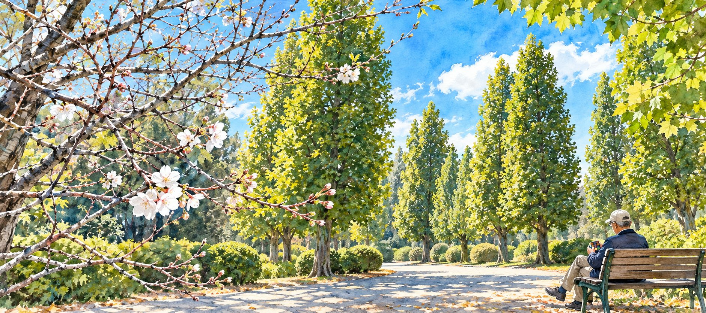
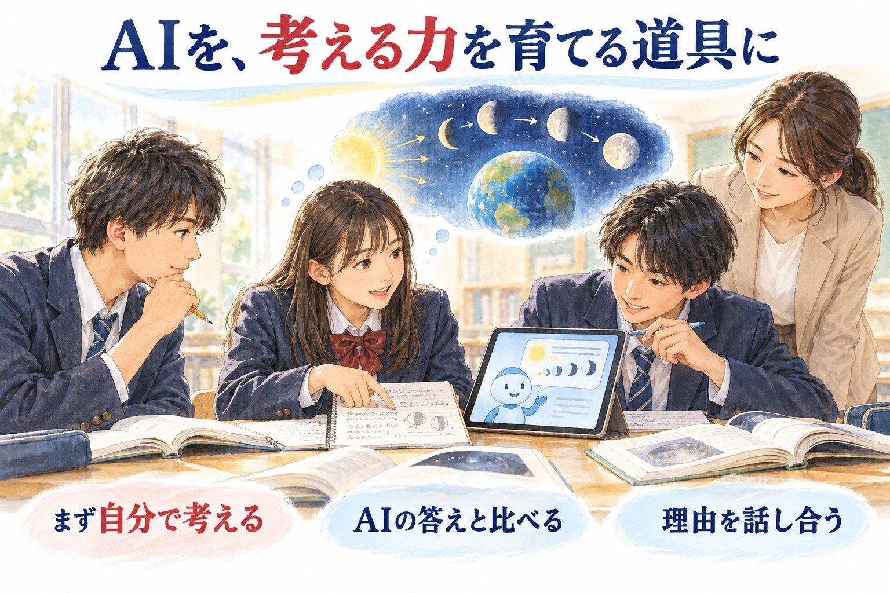
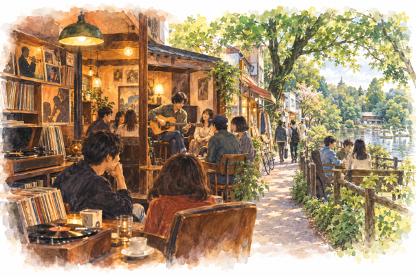
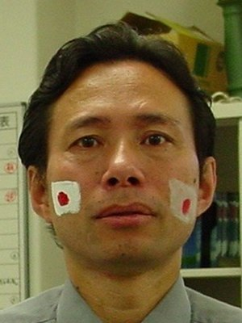

Welcome初めての方へ
気になる入り口から、どうぞ中へ。
物語を味わう
本の中の人物と、いまを生きる人たちの物語。
未来を考える
AI、科学技術、世界のできごと。これからを一緒に考える。

Articles記事

✈️ 旅行
函館への旅／神戸布引ハーブ園
訪れた土地の記憶や、旅のささやかな発見を綴っています。

📚 本・読書
ミリエル司教の思いやりとユゴーの願い
読んだ本の感想や、心に残った一節を綴っています。

🤖 AIと私
AIの自己改善と人間による制御
AIとの対話から生まれた気づきや、日々の活用法を綴っています。

🏮 英語で読む、日本の街と文化
吉祥寺・町の歴史
英字新聞の記事から見えてきた、吉祥寺という街の成り立ちと文化を綴っています。

🌏 英語を通して覗いた日本の社会・海外の現実
アジアの自然災害と金融危機
英字新聞や海外のニュースから見えてくる、日本と世界の姿を綴っています。

🏔️ 挑戦・チャレンジ
「いつか」ではなく「今」―18歳、エベレストへの挑戦
目標に向かって一歩を踏み出す人たちの姿を綴っています。
Profileプロフィール

しおり
「森のしおり」は、日々の暮らしの中で学んだことや感じたことを自分の言葉で伝えたいと思って作りました。
新聞を通して日本や世界の今を知り、それをできるだけ易しい言葉でまとめ、特に若い人たちにもわかりやすく伝えていきたいと考えています。
また、自分自身の関心や成長の記録としても、この場所を大切にしています。
旅先で出会った風景と、読み終えた本の余韻、そしてAIと過ごす何気ない時間。そんな日々のかけらも、ここに少しずつ書き留めていきます。
ゆっくりとしたペースですが、どうぞよろしくお願いします。
私を語る上でのキーワード：英語・英語の新聞・文学・映画・世の中で起こっていること・世の中の変化・科学技術・AIとの壁打ち・旅行・卓球・性善説と性悪説のどっちをとる？